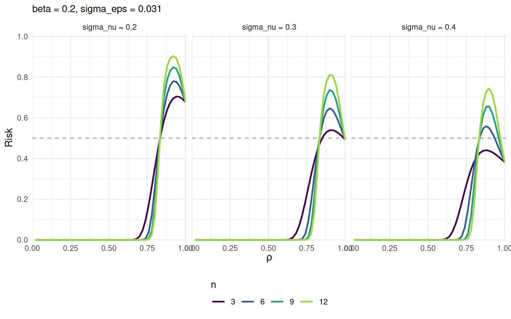
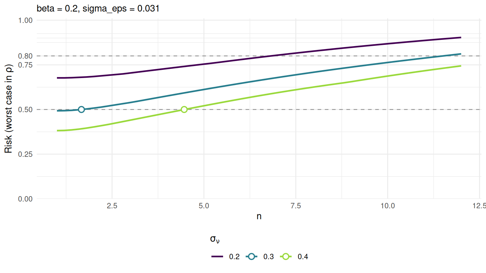
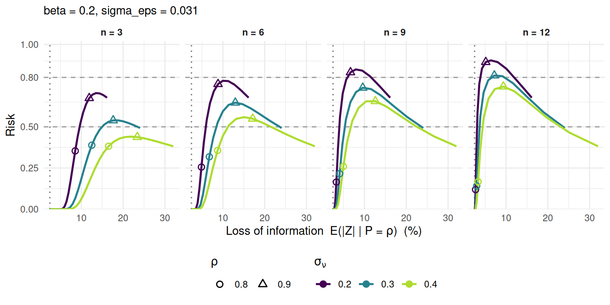

tau_I <- 0.5
grille <- pm_calib_dominance(
sigma_nu = c(0.2, 0.3, 0.4),
n = c(3, 6, 9, 12),
sigma_eps = c(0, 0.031, 0.05),
beta = 0.2
)
grille
#> <pm_calib_dominance> 1800 rows (rho-resolved)
#> rho : 50 values in [0.02, 1]
#> sigma_nu : 3 values in [0.2, 0.4]
#> n : 4 values in [3, 12]
#> beta : 0.2
#> sigma_eps: 0, 0.031, 0.05
#> CI level : 95%
#>
#> worst-case risk & loss range per combination (36 total):
#> sigma_nu sigma_eps n beta rho_at_max_risk risk_max EZ_min EZ_max CI_min
#> 0.2 0.000 3 0.2 0.94 0.712 0.000 15.96 0.000
#> 0.2 0.000 6 0.2 0.92 0.790 0.000 15.96 0.000
#> 0.2 0.000 9 0.2 0.92 0.862 0.000 15.96 0.000
#> 0.2 0.000 12 0.2 0.90 0.922 0.000 15.96 0.000
#> 0.2 0.031 3 0.2 0.94 0.705 2.473 16.15 6.076
#> 0.2 0.031 6 0.2 0.92 0.780 2.473 16.15 6.076
#> 0.2 0.031 9 0.2 0.92 0.848 2.473 16.15 6.076
#> 0.2 0.031 12 0.2 0.92 0.903 2.473 16.15 6.076
#> CI_max
#> 39.20
#> 39.20
#> 39.20
#> 39.20
#> 39.67
#> 39.67
#> 39.67
#> 39.67
#> ... 28 more; call summary() for the full digest.4 Comparer des jeux de paramètres
Ce chapitre ne mobilise aucune donnée. C’est la propriété la plus utile du mécanisme : le risque et la perte d’information s’expriment en forme close à partir des seuls paramètres, si bien qu’on peut comparer des candidats — et mesurer ce que chacun coûte — avant même d’avoir un tableau sous la main.
Les règles sont ici figées à leurs valeurs par défaut, \(\beta_I = 0{,}2\) et \(\tau_I = 0{,}5\), et l’on fait varier les trois paramètres du mécanisme. La grille reprend celle du papier, augmentée de quelques valeurs de \(\sigma_\varepsilon\) pour montrer l’effet du bruit de fond.
La table est résolue en \(\rho\) : chaque ligne donne, pour un jeu de paramètres et un niveau de dominance, le risque du scénario I et la perte d’information dans ses deux métriques (EZ, l’espérance de la perte absolue, et CI, la borne supérieure de l’intervalle de confiance à 95 %).
4.1 La table de décision
summary() réduit cette grille à ce qui fonde la décision : où le risque culmine, à quelle hauteur, et entre quelles bornes se situe la perte.
bilan <- summary(grille)
head(bilan, 12)
#> sigma_nu sigma_eps n beta rho_at_max_risk risk_max EZ_min EZ_max CI_min
#> 0.2 0.000 3 0.2 0.94 0.712 0.000 15.96 0.000
#> 0.2 0.000 6 0.2 0.92 0.790 0.000 15.96 0.000
#> 0.2 0.000 9 0.2 0.92 0.862 0.000 15.96 0.000
#> 0.2 0.000 12 0.2 0.90 0.922 0.000 15.96 0.000
#> 0.2 0.031 3 0.2 0.94 0.705 2.473 16.15 6.076
#> 0.2 0.031 6 0.2 0.92 0.780 2.473 16.15 6.076
#> 0.2 0.031 9 0.2 0.92 0.848 2.473 16.15 6.076
#> 0.2 0.031 12 0.2 0.92 0.903 2.473 16.15 6.076
#> 0.2 0.050 3 0.2 0.94 0.693 3.989 16.45 9.800
#> 0.2 0.050 6 0.2 0.92 0.764 3.989 16.45 9.800
#> 0.2 0.050 9 0.2 0.92 0.828 3.989 16.45 9.800
#> 0.2 0.050 12 0.2 0.92 0.877 3.989 16.45 9.800
#> CI_max
#> 39.20
#> 39.20
#> 39.20
#> 39.20
#> 39.67
#> 39.67
#> 39.67
#> 39.67
#> 40.41
#> 40.41
#> 40.41
#> 40.41Trois lectures s’imposent, et ce sont elles qu’il faut avoir en tête pour calibrer.
\(\sigma_\nu\) fixe la perte maximale. Les colonnes EZ_max et CI_max, qui donnent la perte à \(\rho = 1\), ne dépendent pas de \(n\) : à \(\sigma_\nu\) et \(\sigma_\varepsilon\) donnés, elles se répètent à l’identique pour toutes les valeurs de \(n\). C’est \(\sigma_\nu\) qui détermine la perturbation subie par les contributeurs uniques.
bilan |>
filter(sigma_nu == 0.3, sigma_eps == 0.031) |>
select(n, risk_max, rho_at_max_risk, EZ_min, EZ_max)
#> n risk_max rho_at_max_risk EZ_min EZ_max
#> 3 0.539 0.92 2.473 24.06
#> 6 0.646 0.90 2.473 24.06
#> 9 0.737 0.90 2.473 24.06
#> 12 0.811 0.90 2.473 24.06\(\sigma_\varepsilon\) fixe le plancher de perte. La colonne EZ_min, la perte subie par les cellules les moins concentrées, ne dépend que de lui — et vaut zéro quand il est nul. C’est le bruit universel, appliqué à toutes les cellules y compris les moins sensibles.
bilan |>
filter(sigma_nu == 0.3, n == 6) |>
select(sigma_eps, EZ_min, EZ_max, risk_max)
#> sigma_eps EZ_min EZ_max risk_max
#> 0.000 0.000 23.94 0.653
#> 0.031 2.473 24.06 0.646
#> 0.050 3.989 24.27 0.637\(n\) ne déplace pas la plage de perte, mais déforme la courbe de risque. À \(\sigma_\nu\) fixé, augmenter \(n\) élève le pire risque tout en épargnant les cellules de dominance intermédiaire. C’est l’arbitrage central de l’étape 2 du calibrage.
4.2 L’allure du risque selon la dominance
pm_plot_risk_profile(grille, sigma_eps = 0.031, thresholds = tau_I)
Le profil est en cloche. Le risque est nul pour les cellules faiblement concentrées — aucun contributeur n’y domine, il n’y a rien à inférer — croît jusqu’au voisinage du seuil de dominance, puis redescend pour les cellules les plus concentrées. Cette redescente est voulue : la composante \(\rho^n\nu\) concentre précisément la perturbation sur les cellules très dominées, ramenant leur risque à un niveau bas malgré leur sensibilité intrinsèque.
On voit aussi que le pic monte avec \(n\) et descend avec \(\sigma_\nu\).
4.3 Où le plafond est-il franchi ?
grille_fine <- pm_calib_dominance(
sigma_nu = c(0.2, 0.3, 0.4),
n = seq(1, 12, by = 0.2),
sigma_eps = 0.031,
beta = 0.2
)
pm_plot_risk_max(grille_fine, x_axis = "n", tau = tau_I, mark_frontier = TRUE)
Le pire risque croît de façon monotone avec \(n\). L’ensemble des valeurs admissibles est donc un intervalle \(\{n \le n_{\max}\}\), et les points marqués sont les \(n_{\max}\) de chaque \(\sigma_\nu\) — exactement ce que renvoie pm_suggest_n() (chapitre 5). Avec \(\sigma_\nu = 0{,}2\), aucune valeur de \(n\) ne respecte le plafond : ce niveau de bruit est insuffisant.
4.4 La carte risque-utilité
La figure de synthèse trace, pour chaque couple, le risque contre la perte d’information quand \(\rho\) parcourt \(]0;1]\).
pm_plot_tradeoff(
grille,
sigma_eps = 0.031,
rho_marks = c(0.8, 0.9, 0.95)
)
Chaque trajectoire se lit de gauche à droite à mesure que \(\rho\) augmente. Le producteur y lit d’un coup, pour un candidat donné, le pire risque encouru et la perte qu’il coûte. À \(n\) fixé, diminuer \(\sigma_\nu\) relève le pic de risque tout en abaissant la perte à laquelle il est atteint ; à \(\sigma_\nu\) fixé, augmenter \(n\) relève le pic avec peu d’effet sur sa position.
4.5 Les candidats admissibles
bilan |>
filter(sigma_eps == 0.031, risk_max <= tau_I) |>
arrange(EZ_max) |>
select(sigma_nu, n, risk_max, rho_at_max_risk, EZ_min, EZ_max)
#> sigma_nu n risk_max rho_at_max_risk EZ_min EZ_max
#> 0.4 3 0.441 0.88 2.473 32.01Parmi les couples respectant le plafond, celui qui minimise la perte maximale n’est pas nécessairement le meilleur : un \(\sigma_\nu\) plus élevé autorise un \(n\) plus grand, donc épargne davantage les cellules de dominance intermédiaire.
Le chapitre suivant reprend cette comparaison sous forme de procédure, en la menant scénario par scénario.